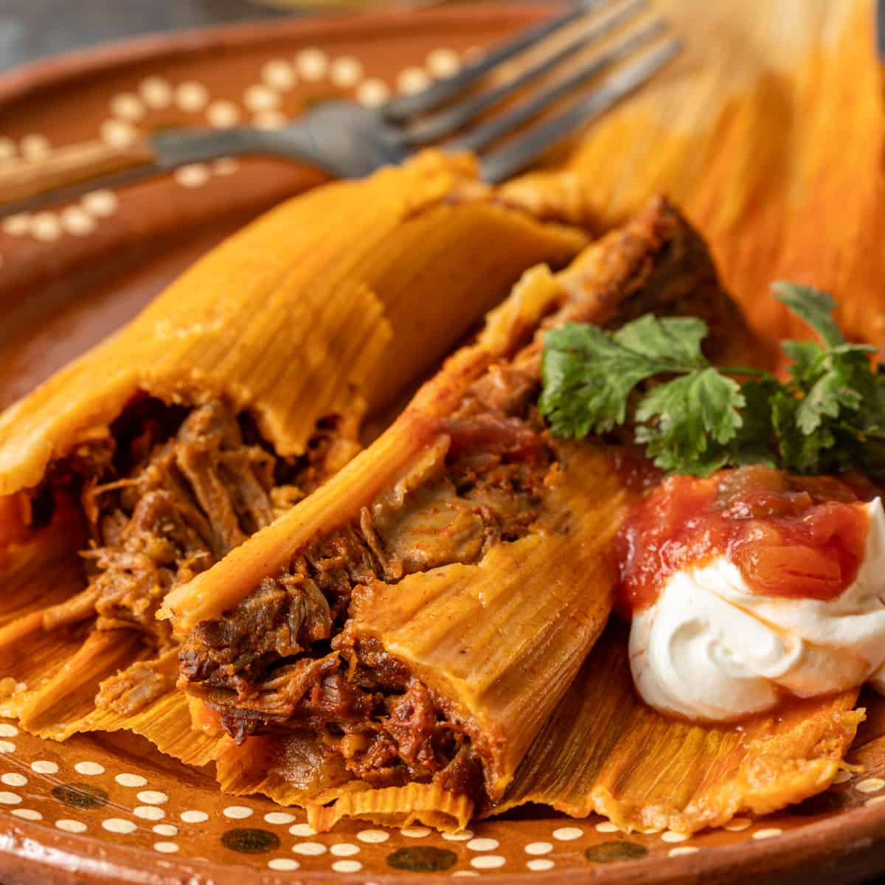
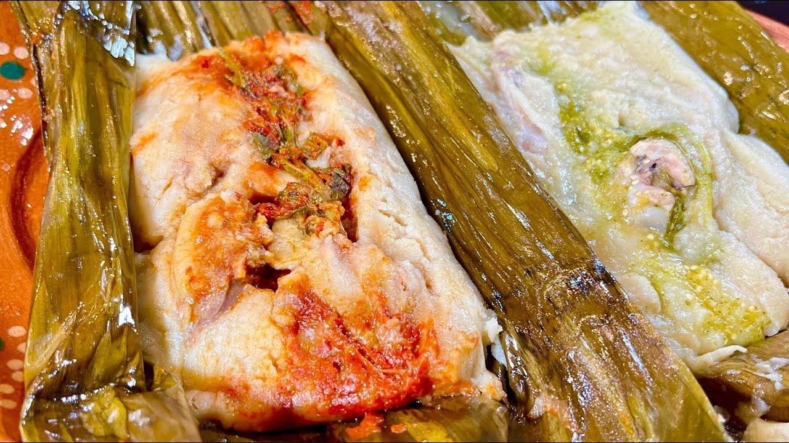
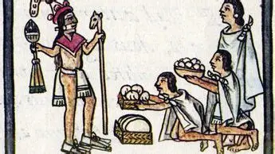

Los tamales son un platillo tradicional de la cocina mexicana,
hecho a base de masa de maíz rellena de diversos ingredientes, como carne, chiles, verduras o frutas.
Se envuelven en hojas de maíz o plátano y se cocinan al vapor.
Los tamales son muy populares durante festividades y celebraciones, y cada región de México tiene sus propias variantes y recetas.

El origen de los tamales se remonta a la época prehispánica en Mesoamérica, donde las civilizaciones indígenas, como los aztecas y los mayas, ya preparaban este platillo.
Los tamales eran una fuente importante de alimento y se utilizaban en ceremonias religiosas y festividades.
Con la llegada de los españoles, se introdujeron nuevos ingredientes y técnicas culinarias, lo que dio lugar a la diversidad de tamales que conocemos hoy en día.

Existen numerosas variantes de tamales en México, cada una con sus propios ingredientes y sabores característicos.
Algunos ejemplos populares incluyen los tamales de pollo, cerdo, rajas con queso, dulce (rellenos de frutas o chocolate) y tamales regionales como los tamales oaxaqueños o los tamales veracruzanos.
Cada región tiene su estilo único de preparar y servir los tamales, lo que refleja la diversidad culinaria del país.
.webp)
En resumen, los tamales son un platillo emblemático de la gastronomía mexicana, con un origen ancestral y una amplia variedad de sabores y presentaciones.
Su preparación requiere tiempo y dedicación, pero el resultado final es un manjar delicioso que se disfruta en todo México y más allá.
.webp)